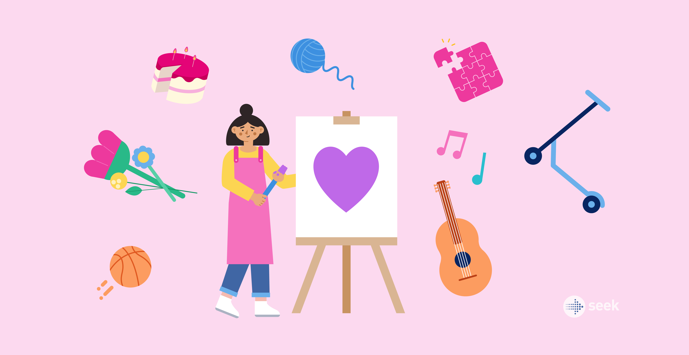

Interests
This page will talk about some of my interests. These will include my hobbies and extracurriculars. I'll also briefly talk about what they are and why I enjoy them. The list on my homepage was satire, but this page is real.

Hobbies:
- Reading: It's very relaxing and helps me calm down. My favorite genre is mystery, but thriller is also fun. I'm not a very big fan of fantasty since I prefer books with a realistic setting. I especially enjoy reading when it's raining outside.
- Drawing: Although I don't take classes, I enjoy drawing. I usually use reference pictures. I think drawing semi-realism is the most fun, but I'm not great at drawing scenery, so I usually draw people. I also think it's a great way to pass time.
- Crochet: I find crocheting very interesting. I think it's cool how I'm able to create cute figures with just a yarn and crochet hook. It feels very accomplishing. But, it's very time consuming and I haven't had a chance to crochet a lot in the past few months.
Extracurriculars:
- Piano: I think playing music is fun and can be relaxing sometimes. I sometimes will pick songs I like and play them. But lately, I don't have as much time to practice since the homework load has been increasing.
- Dance: It's a great way to get exercise while not getting bored. It's always fun to learn new choreography or tricks. But, sometimes we have to dance with props, which I don't like that much. When holding props, I'm always scared that I'll hit someone or drop it.
- Debate: It helps me get better at writing and public speaking. It's been helpful to English class especially. I also enjoy writing arguments and using logic. A bonus is that it doesn't require me to be at a certain place to practice, I can write or practice speeches anywhere, making it very convenient.